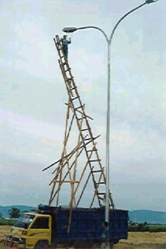
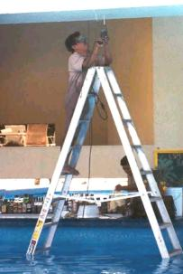
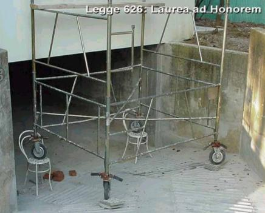
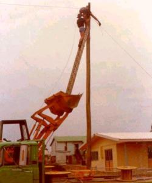
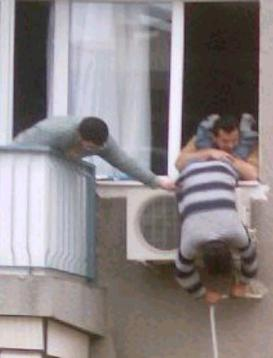

Hinweis: Der Betreiber dieser Website haftet nicht für Rechtsverstöße auf Seiten, auf
die sich externe Links beziehen.
Hinweis: Der Betreiber dieser Website haftet nicht für Rechtsverstöße auf Seiten, auf
die sich externe Links beziehen.Was moderne Bauweisen für unerfahrene Bauherren bedeuten können
Periodensystem komplett erklärt. Gesundheitliche und umwelttechnische Auswirkungen der Stoffe inkl.
Die Öffentlichkeit und Politik wird für die Durchsetzung des Energieabzockens mit vier offenbar zentral gesteuerten Suggestionskampagnen medial beeinflußt:
1. Simulationen und Klimaereignisse "bewiesen", daß der Fortbestand der Menschheit
durch das "Treibhausgas" CO gefährdet sei.
2. Die EnEV sei nicht "scharf" genug, um unsere klimaabstürzende Welt - in Wahrheit gewisse Marktinteressen - zu retten, und
3. Die Barackenbauweise, oft im Verbund mit schadensanfälligem und absurd unwirtschaftlichem High-Tech spare
Energie. Wenn nur wenigstens die Energie teurer wäre, damit das auch wirtschaftlich gelänge.
4. Die industrienahen Fachleute seien sich in 1. bis 3. einig. Nur unabhängige "Spinner/Eigenbrötler" stänkern dagegen.
Entscheiden Sie selbst: Dieser Link bietet auch die Kehrseite der Medaille

"Zum Unglück hat sich mit der Industrie ein System verbunden,
das Profit als den eigentlichen Motor des gesellschaftlichen Fortschritts betrachtet,
den Wettbewerb als das oberste Gesetz der Wirtschaft,
Eigentum an den Produktionsgütern als absolutes Recht,
ohne Schranken,
ohne entsprechende Verpflichtung der Gesellschaft gegenüber. [...]
Noch einmal sei feierlich daran erinnert,
dass Wirtschaft im Dienst des Menschen steht."
Papst Paul IV.
(in seiner Enzyklika über den Fortschritt der Völker
- POPULORUM
PROGRESSIO - Volltext deutsch )
Das Bild zum Thema: Frans Francken - Der Tod und der Kaufmann (1620)
Einführung
Einige Tips zur Produktvermarktung
Zusammenfassung
Themen:
1. Gibt es "aufsteigende Feuchte"?
Das Silikatproblem stellt sich aber nicht nur bei Putzen: Textfortsetzung
Selbst auf "modernen" Putzen funktionieren Wasserglas-/Silikatfarben nicht ohne Probleme, wie die Auszüge folgender Schadensfallbeschreibung aus DAB 11/99 aufzeigen:
"Claus Arendt, Jörg Seele
Sanierputz auf historischem Mauerwerk oder Genese
eines unnötigen Schadens" - Textfortsetzung
Zur bautechnischen Folge der Porosiererei am Ziegelstein schreibt z.B. Dipl.-Ing. Erwin Gierlinger in "Stein-Putz-Risse auf Mauerwerk", Bauhandwerk/Bausanierung 6/99 (Auszüge): Textfortsetzung
Der Webmeister der Altbau und Denkmalpflege Informationen kennt aus seiner Berufserfahrung bei Brandschadensfällen, aus seinen mit Feuerwehr, Bauaufsicht und Brandversicherung entwickelten Brandschutzkonzepten für die betreuten Denkmalinstandsetzungen und als Nachweisberechtigter für den vorbeugenden Brandschutz bei Vorhaben mittlerer Schwierigkeit gem. Art. 68 (7) Satz 3 Nr. 2 i.V.m. Art. 2 (4) BayBO (1998) den Wahnsinn, der aus übertriebenem und unzureichendem Brandschutz im Altbau enstehen kann.
Nicht nur die gemeinen Tricks der Brandversicherung, brandgeschädigte Hausbesitzer mit viel zu geringen Schadensersatzsummen abzuspeisen (dazu könnte ich aus der Opferberatung und Projektabwicklung verschiedene Nähkästchen füllen, wie man dann doch ansehnlich aufspeckt), auch die Brandschutzpraxis selbst verdient besondere Beachtung. Die Altbau und Denkmalpflege Informationen kümmern sich darum.
Der nachträgliche Brandschutz im Altbau erfordert bestandsverträgliche Kompensationsmaßnahmen, um das Kind nicht mit dem Bade auszuschütten. Im Januar 1999 erschien dazu ein Praxis Ratgeber Brandschutz der Deutschen Burgenvereinigung e.V. aus der Feder Herrn Kreisbrandamtsrats Dipl.-Ing. Sylvester Kabat. Sein Fachwissen ist ja nicht nur in einschlägigen Publikationen, sondern auch bei der Projektberatung von Sonderbauten und auf unseren Fachtagungen (Nürnberg 1999, Würzburg 2004) mit nachfolgenden Tagungsbänden sehr gefragt.
Ein weiterer aktueller Beitrag zum Thema Brandschutz im Altbau ist Herrn Kabats Schriftfassung seines Vortrags auf dem Seminar der Deutschen Burgenvereinigung 1999 in Nürnberg. Das ist Fachwissen, das in Brandschutzgutachten für Altbauten einfließen müßte. Ob das immer gelingt?
Wichtig für die Denkmalbaustelle, wo ein Funken unersetzliche Substanz vernichten kann: Mobile Brandschutzsysteme mit höchstem Sicherheitsniveau. Wieviele Burgen, Schlösser und Kirchen sind schon Opfer nachlässiger Bauhandwerker geworden, nicht nur durch falsche "Sanierbaustoffe". Rauchen und Saufen, Schweißen und Löten bieten dem roten Hahn das Futter, das er am liebsten frißt. Bitte nicht am Baudenkmal!!
Weitere qualifizierte Information bieten die nachfolgenden Links:
Brandkatastrophen mit Dämmstoffen
Verein der Brandschutzbeauftragten Deutschland e.V. vbbd.de
Bundesverband Brandschutz-Fachbetriebe e.V.
Kostenlose aktuelle Landesbauordnungen,
Musterbauordnung, Bauvorschriften bei Feuertrutz GmbH
Neu: Das
deutsche Notfallvorsorge-Informationssystem - deNIS - Serviceangebot
des Bundesverwaltungsamtes - Zentralstelle für Zivilschutz (ZfZ) -
i. A. der Bundesregierung. Umfangreiche Linksammlung für Katastrophenschutz, Zivilschutz und Notfallvorsorge.
buildingconservation.com:
Lightening Protection for Historic Buildings
Nicht uninteressant zur Bewertung von brennbaren Baustoffen, die ja in der heutigen Dämmpraxis die entscheidende Rolle spielen, in brandschutztechnischer Hinsicht ist diese Tabelle (Quelle: Dr.-Ing. Wolfgang J. Friedl, vfdb-Zeitschrift 9/99):
Brandgasvolumenstrom in verschiedenen Materialien
| Material (10 kg) | Brandgase in m3/h |
| Schaumgummi | 25.000 |
| Schaumstoff | 23.000 |
| Papier | 10.000 |
| Polypropylen | 7.000 |
| Spanplatten | 7.000 |
| GFK-Kunststoff | 5.000 |
| PVC-Kunststoff | 4.000 |
| Linoleum | 2.500 |
Wie es mit Brandfällen im kunst- und dämmstoffverseuchten Einfamilienhaus ausgehen kann, finden Sie hier.





Bei der Reparatur von stark geschädigten Altbauten und Ruinen spielt auch die Koordination der Arbeitsschutzmaßnahmen durch den Architekten bzw. den Bauleiter eine entscheidende Rolle. Die Einführung der EG-Baustellenrichtlinie kommt dem Anliegen nach fachgerechter Sicherheitsplanung entgegen. Sie muß am Altbau an die für eine sachgerechte Bausanierung geltenden Randbedingungen angepaßt werden. Auch die heutzutage im Unterschied zu früher geradezu unendlich unterschiedlichen Baustoffe/-materialien, Bausysteme und Bauverfahren, die die oft nur begrenzt fachkundigen Planer und/oder Unternehmer dem historischen Bauwerk draufzünden, sollten idealerweise mit geeigneter Strategie und kritischem Problembewußtsein ausgewählt und an den Baubestand sinnvoll angepaßt werden.
Dabei könnte auch die Frage nach der Mitverantwortung des Bauleiters und Sicherheitskoordinators entstehen, wenn das Bauunternehmen bestimmte Verfahren, Werkzeuge und Maschinen benutzt, die möglicherweise in sich Sicherheitsrisiken bergen. Was ist, wenn die scharfe Kette einer alten Kettensäge im Gebrauch reißt und den danebenstehenden Handwerker verletzt? Solche Arbeitsunfälle sind ja nicht selten. Nicht jedes gebrauchte Werkzeug birgt nun wegen des Gebrauchs erhöhte Risiken, ein gewissenhafter Blick wird aber auch hier nicht schaden, ein erfahrener Bauleiter weiß das.
Die unten aufgeführten Links beschäftigen sich mit der Rolle des Sicherheits- und Gesundheitsschutz-Koordinators im Neubau. Zum Brandschutz siehe hier. Die wesentlichen Grundsätze sind selbstverständlich auch im Altbau anwendbar. Zu ergänzen sind lediglich die Einflüsse, die sich aus der mehr oder weniger geschädigten bzw. gefahrenträchtigen Altbausubstanz selbst ergeben, z.B. ungesicherte Burgruinen, Kirchtürme oder verfaulte Fachwerkbauten. Hier stellen sich nicht nur Fragen nach dem Schutz wertvoller Bauteile während der Baumaßnahme, nach dem Baustellenschutz vor Vandalismus, Einbruch, Diebstahl und Brandstiftung, sondern vor allem nach dem Schutz der dort befindlichen Personen. Sicherheit geht vor! Die bisherige Ausbildung, der Verfasser schließt dies vorwiegend aus dem von ihm abgeschlossenen SiGeKoordinatoren-Lehrgang für Multiplikatoren bei der BauBG Bayern/Sachsen und den dortigen Fachgesprächen, kümmert sich um die altbautypischen Aufgabenstellungen leider kaum.
Vor der Planung von Bauarbeiten in "gefährlichen" Altbauten sollte also rechtzeitig ein Sicherheitskonzept gemeinsam mit der Bau-Berufsgenossenschaft und einem Brandschutzgutachter erarbeitet werden. Die dort angesiedelte Kompetenz betr. Arbeitssicherheit, Umgang mit kontaminierten Bauteilen (z. B. alte Holzschutzmittelanwendungen vor dem Einsatz von giftfreien Mitteln) und Früherkennung und Vorbeugung besonderer Gefahrensituationen ist unersetzliches Fachwissen und verhütet Personen- und Sachschäden, Baustellen- und Finanzierungsrisiken. Wo hätten wir im Architekturstudium hierüber etwas Verwertbares gehört?
Zu beachten: Im Altbau sollte die Bestandsaufnahme der Sicherheits- und Gesundheitsrisiken des Baustellenablaufs auch die entsprechenden Risiken aus dem Bestand selbst erfassen.
Außerdem geht es dabei nicht nur um Risiken für den Bauarbeiter, sondern auch für den Benutzer (Sick-building-syndrom, Wohngifte in Baustoffen, gesundheitsgefährdende Bauweisen wie Einbau von Wärmedämmung, dichter Fenster und Lüftungs-/Klimaanlagen), und für das Bauwerk wie die Verwendung nicht dauerbeständiger, kaum bestandsverträglicher und schadensanfälliger Baustoffe (Stahlbeton, Kunstharzhaltige Beschichtungsstoffe und Kleber, überharte Zement- und Silikatprodukte) sowie die Brand- und sonstige Zerstörungsgefahr im Bauablauf.
Der gute SiGeKo wird seinem Bauherrn auch dadurch viel Nutzen bringen, daß er die unwirtschaftlichen Architektenspinnereien in seiner "Unterlage" gem. BaustellV herausarbeitet. Dabei geht es um die erforderlichen Sicherheitseinrichtungen und sonstige Vorsichtsmaßnahmen für die spätere Wartung und Instandhaltung des genutzten Bauwerks. Wenn der Bauherr schon im Planungsprozeß erfährt, was die schicke Glasfassade an Unterhaltskosten mit sich bringt, was Grasdächer für Folgekosten produzieren, desgleichen Stahlbetonbalkone und schadstoffhaltige Baustoffe mit kurzer Lebensdauer wie kunstharzhaltige Fassadenbeschichtung auf faserstaubabsondernden Dämmstoffen ... Zeitgeist-Architekten warm anziehen.
Der Sicherheits- und Gesundheitsschutz im Altbau
- Planungsaspekte bei denkmalgeschützter Sanierung
Vortrag von Dipl.-Ing. Konrad Fischer auf der 1. Fachtagung
der Koordinatoren Deutschlands in Leipzig, 7.-8.4.2000, Veranstalter:
Bau-Atelier, Vereinigung der Koordinatoren für Sicherheits- und
Gesundheitsschutz BVKSG e.V.
Das Bundesarbeitsministerium informiert:
Verordnung
über Sicherheit und Gesundheitsschutz auf Baustellen Weitere Information: Die Baustellenverordnung mit weiterführenden Links
Adressen und Links Denkmalpflege/Bau Beachten Sie bei der Wiederverwendung historischer Baustoffe - Florian Langenbeck - Historische Türen, Schlösser und Beschläge, Baustoffe, Fundgrube Baumarkt im Internet - nie geschlossen! - Schöne Suchmaschine nach Bauthemen Natürliche Farben, Anstriche und Verputze selber herstellen /Sonstige/Others Center for Bygningsbevaring i Raadvad - Conservation/Restoration/Building material and technology/Consulting
and education (dansk/english) Tradition & byggproduktion, kunskap och material -
Baustoffwissen der schwedischen Denkmalpflege. Obermain-Tagblatt 8.12.1999 "Bauunternehmer als Schleuser verurteilt HOF.
Ein Bauunternehmer aus dem Landkreis Hof wurde wegen Untreue, Betrugs, Schleusung und Beschäftigung
illegaler Bauarbeiter zu einer Freiheitsstrafe von fünf Jahren und drei Monaten verurteilt. ... der
gelernte Kapitän (hatte) auf seinen Baustellen Trupps rumänischer
Schwarzarbeiter eingesetzt. Damit sparte (er) Steuern und Abgaben in Millionenhöhe. Das Gericht bescheinigte dem 52-Jährigen, seine "skrupellosen und niederträchtigen Taten" seien einzig und
allein von der Gier nach Geld geprägt gewesen. Wo die Millionenbeträge
geblieben sind, konnte auch das 27-tägige Mammutverfahren nicht klären.
Die Firma des 52-Jährigen war 1997 in Konkurs gegangen. Große
Teile der Buchführungsunterlagen waren auf ungeklärte Weise verschwunden. ... auch der Anstiftung zur Körperverletzung schuldig. ...
ließ ... Bauleiter krankenhausreif schlagen. Reifen wurden so kunstvoll
angestochen, dass sie erst bei hohen Geschwindigkeiten auf der Autobahn platzten.
Säumige Zahler wurden zum Schein erhängt. ... auch zahlreiche Vorwürfe gegen leitende Beamte der
Kriminalpolizei und des Bundesgrenzschutzes ... sollen ... vor Razzien gewarnt und Tipps zur Schleusung der Rumänen über die
tschechisch-deutsche Grenze gegeben haben." und am 10.12.99, so schnell kann´s gehen: "Kripo-Chef aus Hof erhängt aufgefunden HOF/PLAUEN.
Der Chef der Kriminalpolizei in Plauen, Karlheinz Sporer, hat Selbstmord begangen. Der ... vermisste
Beamte (57) hat sich ... an einem Hochsitz nahe der bayerisch-sächsischen Grenze
erhängt. Gegen Sporer ... im so genannten Baumafia-Prozeß in Hof
schwere Vorwürfe ... ... Kriminelle vor Razzien gewarnt
und Tipps für die Einschleusung illegaler Bauarbeiter aus Osteuropa ... Im Gegenzug ... kostenlose Dienste von Prostituierten ... ... die kriminellen Handlungen des Angeklagten seien von leitenden Beamten
der Kripo und des BGS begünstigt worden." 1. Man denkt an den schönen Grenzerwitz: "Hängt die Sau scho wieder da" und Deutschland 1999. Und 2000 aufwärts? 2007 doller Korruptionsprozeß rund um das Hofer Bauamt. Seit
Jahrzehnten Schweinerei wie gehabt.
Arbeitsschutzgesetz
Arbeitshilfen zur Umsetzung und Anwendung der Baustellenverordnung
Arbeitsschutz und Gefahrstoffe - Umfangreiche Linkliste zu Krebs, Morbus Hodgkin
(MH), Non Hodgkin Lymphom (NHL), Weichteilsarkom (WTS), Leukämie ( Myeloische L. (ML), Lymphatische L. (LL), Aplastische Anämie
(APA) bei schlechtem Arbeitsschutz durch:
Polychlorierte Biphenyle (PCB), Weichmacher, Schwerentflammbare Flüssigkeit, Hydrauliköl, Bergbauhydraulik, Flugzeughydraulik,
Polyzyklische Kohlenwasserstoffe (PAK), Dioxine (TCDD), Furane (TCDF), Coplanare PCB, Phosphorsäureester, E 605, Pentachlorphenol
(PCP), Holzschutzmittel, Agent Orange (2,4-D und 2,4,5-T), Pestizide, (DDT, DDE, Lindan, Pyrethroide, Formaldehyd u.a.), Herbizide,
Fungizide, Biozide, Insektizide, Desinfektion, Lösungsmittel, Benzol, Toluol, Xylol, Benzin, Treibstoff, Düsentreibstoff,
Kerosin, Dieselöl, Auspuffgase, Nitro Verbindungen, Chlorierte Kohlenwasserstoffe (CKW), Trichlorbenzol, Trichlorethylen (1,1,1-TRI
und 1,1,2-TRI ), Trichlorethan, Perchlorethylen, Tetrachlorethylen (PER) und Tetrachlorethan, Innenraumluft, Halogenkohlenwasserstoffe,
Bildschirmarbeit (VDT), Multiple Chemikalien Sensibilität (MCS), Gefährliche Giftstoff-Intoleranz, Flammschutzhemmer,
Ionisierende Strahlung (IR-, UV-, Mikrowellen-, Alpha-Strahlung, Beta-Strahlung, Gamma-Strahlung, Neutronenstrahlung), Radongas,
Photochemie, Radikalenbildung, Synergismen, Kernkraftwerke (KKW), Atomwirtschaft, Asbest, Künstliche Mineralfasern (KMF),
Schweissrauch, Rauchgas, Nitrose Verbindungen
Gemeinsame Deutsche Arbeitsschutzstrategie (GDA) mit den wesentlichen Gesetzesgrundlagen,
Verordnungstexten und weiterführender Information
Deutsche Gesetzliche Unfallversicherung mit weiterführender Information
Gefahrstoffdatenbank der Berufsgenossenschaft Bau: GISBAU
16. Links/Info zu verwandten sonstigen Themenbereichen/Historische Baustoffe
Die erhaltende Instandsetzung - Bauen im Bestand nach wirtschaftlichen und bestandsverträglichen Methoden -
Mit vielen Bild- und Planbeispielen
Bau.Net - Forum:
Modernisierung/Sanierung/Bauschäden - sehr zu empfehlen. Täglich neue Fälle und Beiträge!
Ökotest - Heiße
Informationen auch zu modernen Baustoffen, die Chemielabors sogar im Baudenkmalversuch freisetzen
Blauer Engel - Informationen
zu kritischen und gefährlichen Zutaten in unseren Industrie- und sog. Naturbaustoffen
Bundesanstalt für Arbeitsschutz und Arbeitsmedizin (BAuA) - mit weiterführenden Informationen zu Schadstoffen und Wohngiften
Eidgenössisches Bundesamt für Gesundheit BAG - Wohngifte Info
www.moderner-lehmbau.de - rund um den ältesten Baustoff der Welt
1. Die Umstände ihrer Gewinnung können denkmalschädigend sein - durchs Land fahrende Räuber/Diebe/Einbrecher brauchen immer
Hehler... Der Marktwert von alten Baustoffen begünstigt den Denkmalverlust.
2. Historische Baustoffe, insbesonders Altholz können mit gesundheitsschädigenden
"Schutzmitteln", "Sanierbaustoffen/Bauchemiekampfmittel" usw. verseucht sein.
3. Wichtig: Herkunftsnachweis und haftungswirksame Verkäufergarantie
auf Unbedenklichkeit fordern. Im Zweifelsfall Laboruntersuchung auf giftige Substanzen fordern und prüfen.
Unternehmerverband Historische Baustoffe
Historische
Baustoffe vom Architekten: www.kreislaufkirchheim.de
Historische Baumaterialien
Historische Ziegel, Dielen, Fenster u.a. Baustoffe www.spolia.de - Mit interessanter
Zusatzinfo (Bauphysik hist. Baustoffe) und spannenden Anwendungsbeispielen
Historische Baustoffe Jürgen Schaubhut
edition anderweit - Das Verlagsprogramm rund um den Altbau und die historischen Baumaterialien und sein
Beratungsdienst Baurat.de
Nützlich für die stoßfreie Neuverlegung von Holzdielen im historischen Umfeld:
Die Angebote von Baumärkten fördern in der Hand des begeisterten Heim- und Handwerkers bestimmt die überall sichtbare äußerste Aufhübschung unserer
historisch gewachsenen Kulturlandschaft. In der Hand des Könners sind sie selbstverständlich unbedenklich. Wenn man allerdings von der äußeren Erscheinung
der Märkte im Gewerbegebiet auf deren Inhalt und ihre Verkaufsphilosophie schließt ...
OBI-Baustoffhandel - mit Bestellmöglichkeit
Baumarkt 1 - Baustoffangebot, Handwerkstips und Adressen
Baumarkt 2 - Baustoffangebot, Handwerkstips und Adressen
Baumarkt 3 - Baustoffangebot, Handwerkstips und Adressen
Heimwerkermarkt - mit vielen Infos
Energiesparen, aber richtig
Weitere Beratungs- und Informationsquellen
The Canadian Institute for Research in Construction
CONTEMPORARY FRESCO PAINTING RESOURCE CENTER
International Masonry Institute
The Preservation Trades Network PTN - a non-profit task force of the Association for Preservation
Technology International (Rockville, MD)
U. S. Heritage - Publications Masonry and Restoration Journal, Video and Audio
Publications
Zum Abschluß ein Blick auf die Lage der Bauunternehmer, die sich am gnadenlosen Markt "frei" entwickeln müssen:
2. Stellt sich die Frage, ob am Hochsitz für den Rest der Bagage noch Platz ist?